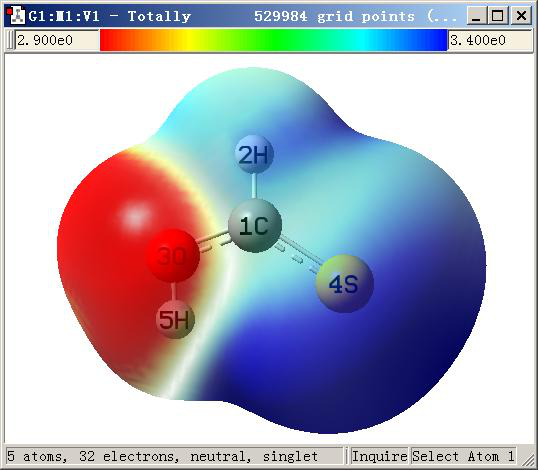
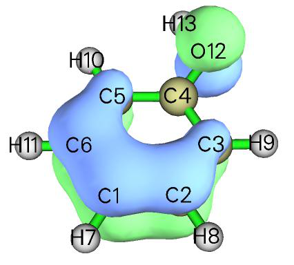
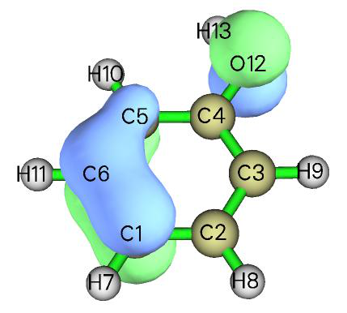
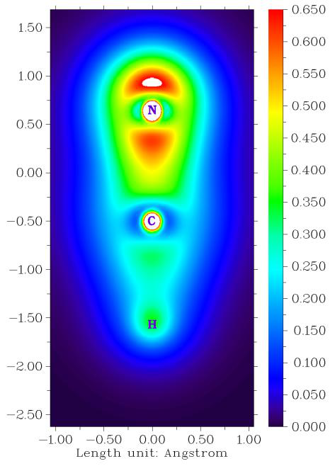
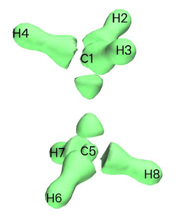
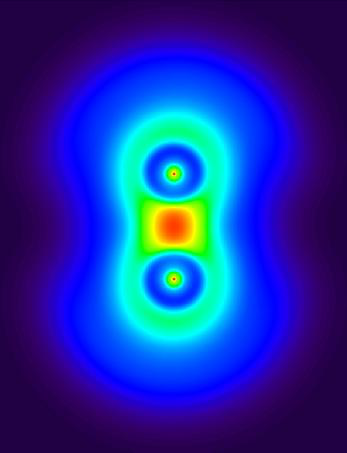
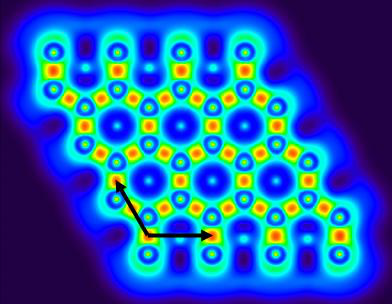

修改和检查波函数¶
Multiwfn manual, p.558–562.英文原文见同名 English 章节。 Images:
../imgs/.
从图中可以看出，绘制在2.9 Bohr（红色）到3.4 Bohr（蓝色）之间的D(r)清楚地区分了化学上较硬的氧孤对（红色）和较软的硫孤对（蓝色）。
在第4.12.8节中，将通过定量分子表面分析模块对该体系作进一步研究。
4.6 修改和检查波函数¶
4.6.1 删除某些Gaussian函数¶
在主功能6的子功能25中，你可以设置满足某些条件的Gaussian型函数（GTF）的轨道展开系数。如果系数被设为零，就意味着这些GTF的信息被删除。在本例中，我们从苯酚的轨道23中删除属于原子2、3、4的所有Z型GTF，然后为该分子轨道绘制等值面。启动Multiwfn并输入以下命令
examples\phenol.wfn
Multiwfn 交互
- 6 — 修改波函数
- 25 — 设置满足某些条件的GTF的系数
- 0,0 — 设置GTF序号范围，只有满足此条件的GTF才会被保留到下一步。0,0告诉Multiwfn范围为“全部（ALL）”
Multiwfn 交互
- 2,4 — 只有归属于原子2、3、4的GTF才会被保留到下一步
- Z — 只保留Z型GTF到下一步
- 23,23 — 设置轨道下限和上限，若相同，则只选择一个轨道
Multiwfn 交互
- 0 — 将轨道23中所选GTF的系数设为零，即删除它们的信息
- 0 — 将当前波函数保存为当前目录下的new.wfn 你可以选择选项4并输入23来查看轨道23的展开系数，以验证

你的操作是否正确。让我们比较修改前后轨道23的等值面。为了绘制修改后的轨道23，你可以关闭Multiwfn并载入new.wfn，或直接选择选项-1返回主菜单，然后进入主功能0绘制其等值面。
左侧为未修改状态，分子平面平行于XY平面，因此若删除某些原子中的Z型GTF，等值面的相应部分应消失，这正是我们在右侧（修改后状态）所看到的。
4.6.2 价电子密度分析：移除某些轨道对实空间函数贡献的例子¶
在Multiwfn中，可以移除某些轨道对实空间函数的贡献。从第2.6节中的公式可以清楚看出，若将某些轨道的占据数设为零，它们就没有贡献，就好像不存在一样。实际上，在第4.5.3节中我们已经
用过这一技巧，将ELF分离为ELF-σ和ELF-π。注意，有些实空间函数相对轨道不是线性的，如ELF和LOL，因此不能计算为每个占据轨道贡献之和。相反，有些实空间函数相对轨道是线性的，如电子密度和动能密度，它们可以分解为各轨道的贡献。
若研究去掉内层芯分子轨道贡献后的电子密度，这种分析即称为“价电子密度分析”，已被证明在分析分子电子结构方面非常有效。这类分析的大量例子可在我的论文"Revealing Molecular Electronic Structure via Analysis of Valence Electron Density" Acta Phys. -Chim. Sin., 34, 503 (2018) DOI: 10.3866/PKU.WHXB201709252中找到。
下面，给出研究价电子密度的两个例子。
例1：绘制HCN价电子密度的填充图 在本例中，我们将手动移除由内层芯原子轨道构成的MO对HCN电子密度的贡献，从而绘制其价电子密度图，过程非常简单。内层芯原子轨道能量总是很低，因此只对能量最低的MO有贡献。氢没有内层芯原子轨道，而碳和氮各有一个内层芯原子轨道，因此我们需要做的就是将前两个MO的占据数设为零（注意这是闭壳层波函数）。
现在，启动Multiwfn，并输入以下命令 examples\HCN.wfn 6 // 修改波函数


Multiwfn 交互
- 26 — 设置占据数
- 1,2 — 选择MO 1和2
- 0 — 将它们的占据数设为零
- q — 返回上一级菜单
- -1 — 返回主菜单
然后，若像往常一样用主功能4绘制电子密度的填充图（如第4.4节中的例子），我们将得到下图
从上图可以容易地辨认C-N和C-H键的成键区，也可清楚地观察到氮的孤对区。注意，碳和氮中心的白色小圆圈并不对应1s电子，而是由于价原子轨道对芯区有穿透效应所致。
例2：绘制乙烷价电子密度的等值面图 为方便起见，Multiwfn在主功能6中提供了选项34，可直接将所有由内层芯原子轨道构成的MO的占据数设为零。在本例中我们将使用该功能，并绘制乙烷价电子密度的等值面图。
启动Multiwfn并输入 examples\ethane.wfn
Multiwfn 交互
- 6 — 修改波函数
- 34 — 将内层轨道占据数设为零
- -1 — 返回主菜单
- 5 — 计算格点数据并可视化等值面图
- 1 — 电子密度
- 3 — 高质量格点
- -1 — 显示等值面图
将等值面值改为合适的值0.25并关闭分子结构的显示后，我们将看到

如你所见，碳的芯电子，以及用于形成C-C键和C-H键的电子，都被等值面清楚地揭示出来。
最后，值得一提的是，价电子密度分析绝不限于作图分析。例如，通过使用主功能2和17，也可以直接对价电子密度分别进行拓扑分析和盆分析；你所要做的只是在对电子密度进行常规分析之前移除内层芯MO的贡献（如上所示）。
关于价电子密度分析的更多例子，见我的博客文章“通过电子定域函数（ELF）和价电子密度分析研究亲核进攻方向”（http://sobereva.com/606，中文）。
4.6.3 平移并复制石墨烯原胞波函数到周期体系¶
重要注记：要分析周期体系的波函数，最好将Multiwfn与CP2K联用，见第2.9.2节。本节的主要目的只是说明平移和复制波函数的功能。
Gaussian的周期边界条件（PBC）计算生成的.fch或.wfn文件只包含原胞的波函数，因此分析结果不显示任何周期特征，当然你也可以在PBC计算前将体系扩展为多个原胞，但计算要花费多得多的时间。Multiwfn提供了一种将原胞波函数转换为大超胞波函数的方法，从而在感兴趣区域内，实空间函数呈现周期特征。
注：注意，以这种方式构建超胞波函数只是一种非常粗糙的近似！由于忽略了相邻原胞之间的轨道混合，因此不能忠实地重现超胞的轨道波函数。
本节以石墨烯为例。首先，生成石墨烯原胞的.fch（或.wfn）文件。Gaussian输入文件中“分子坐标”字段的内容为
C 0.000000 0.000000 0.000000
C 0.000000 1.429118 0.000000
TV 2.475315 0.000000 0.000000
TV -1.219952 2.133447 0.000000

在路径行写“#P PBEPBE/3-21g/Auto SCF=Tight”。用Gaussian运行该输入文件，然后用formchk将二进制checkpoint文件转换为graphene.fch。然后启动Multiwfn并输入：
Multiwfn 交互
- examples\graphene.fch 6 — 修改波函数 32
- 平移并复制原胞波函数 2.475315,0.0,0.0 — 平移矢量 1 2
沿此方向平移并复制当前体系三次
Multiwfn 交互
- 32 — 注意当前体系已有四个原胞，这次我们将在另一方向上平移并复制当前体系三次，因此最终体系将包含16个原胞
Multiwfn 交互
- -1.219952,2.133447,0.0 — 平移矢量 2
- 2 — 单位为Å
- 3 — 沿此方向平移并复制当前体系三次 下图中左侧是原胞的LOL函数。经过上述操作后，我们重新计算LOL函数，得到右侧图形（黑色箭头表示平移矢量）。显然，扩展体系的中心区域显示出正确的周期特征，但边界区域的行为仍不正确，你可以进一步扩展体系以扩大“正确”区域。
注意，若PBC计算中未指定nosymm关键词，Gaussian可能自动将体系放入标准取向，此时不应使用Gaussian输入文件中的平移矢量作为在Multiwfn中平移复制体系的平移矢量，而应使用.fch文件中的“平移矢量（Translation vectors）”字段或Gaussian输出文件中的“PBC矢量（PBC vector）”段的内容。

